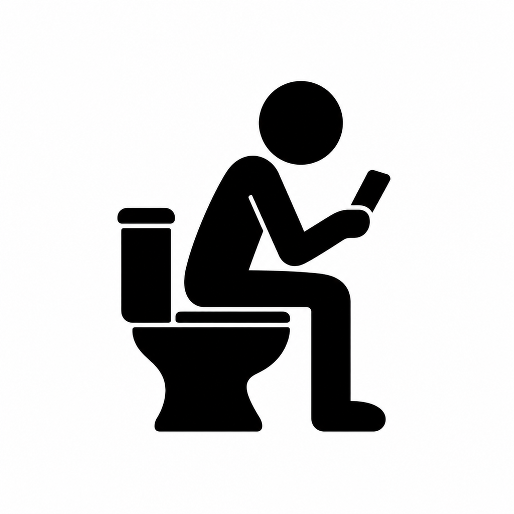

Poop Games
We all poop. We all go on our phone. Play these games instead of brainrotting. Never any ads. All features 100% free.
Three games. One better break.
Crossword: a daily newspaper-style grid. Word Guess Daily: find the five-letter word in six guesses. Green means the right spot; gold means the letter is elsewhere; gray means absent. Galactic Raiders: hold arrows to move and Fire to shoot. Clear waves, dodge shots, and beat your best score.
Crossword support
Tap New puzzle to begin. Tap a square to select it; tap again to switch direction. Pinch the grid to zoom. Use Clues to jump to a word and Check to find incorrect letters.
Your puzzles save as you play. Find unfinished and completed puzzles inside Crossword. A new puzzle unlocks at local midnight. You can return to saved puzzles anytime.
Need help? Open an issue.
Crossword content
New puzzles use newspaper-style 15 × 15 grids with 70–82 clues. Previously saved mini puzzles keep their original grids and progress.
Word and clue data includes CC0 content from Open Crossword Bank, combined with our original clues and layouts.
Privacy
Poop Games collects no personal data. No accounts, ads, analytics, tracking, or in-app purchases.
Puzzles and progress stay on your device. A small record in the iOS Keychain remembers your puzzle sequence and last start date to prevent repeats. iOS may retain this record after uninstalling. Saved puzzle progress may be lost if you delete the app; device backups are managed by Apple.
Privacy and support links open in your browser. GitHub hosts this page and handles any information you choose to submit in an issue under its own privacy policy.
The 3,000 included puzzles never cycle back to the start. Daily limits follow your device's local calendar. Progress is not synchronized between devices.
Updated October 31, 2026 · © 2026 Jake Johnson